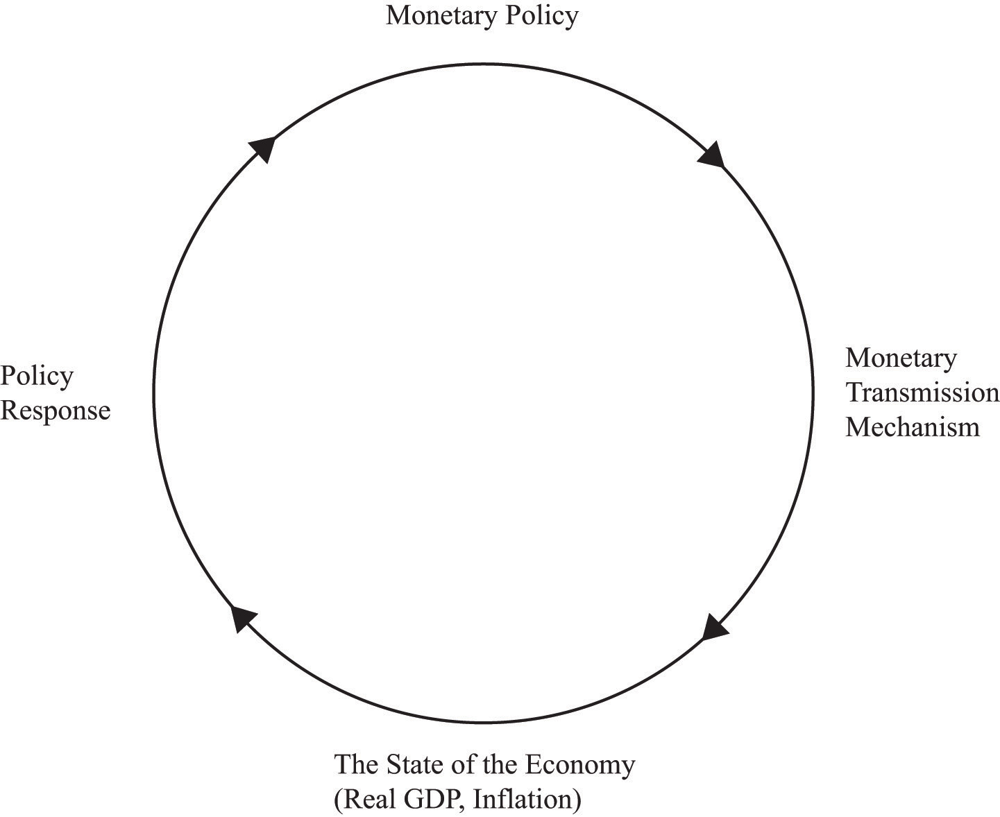

In August 2011, these 10 individuals were among the most powerful people in the world.
You may not have heard any of these names before. It is certainly unlikely that you have heard of more than one or two of these individuals. Yet they decide how easy or difficult it will be for you to get a job when you graduate. They decide how expensive it is for you to buy a car. They decide how many pesos you get for a dollar if you travel from the United States to Mexico. They decide if the Dow Jones Industrial Average is going to increase or decrease. They decide whether the stock markets in Tokyo, London, Hong Kong, and Frankfurt are going to increase or decrease. They decide the cost of your vacation abroad and the cost of the clothes that you buy at home.
So who are they?
They are the members of a group called the Federal Open Market Committee (FOMC). They are responsible for setting monetary policy in the United States. Of course, they do not literally decide all the things we just mentioned, but their decisions do have a major influence on everything we listed. This chapter is about what these people do and why their choices matter so much for our day-to-day life. We begin with an example of this group at work.
FOMC Policy Announcement: February 2, 2005
For immediate release
The Federal Open Market Committee decided today to raise its target for the federal funds rate by 25 basis points to 2-1/2 percent.
The Committee believes that, even after this action, the stance of monetary policy remains accommodative and, coupled with robust underlying growth in productivity, is providing ongoing support to economic activity. Output appears to be growing at a moderate pace despite the rise in energy prices, and labor market conditions continue to improve gradually. Inflation and longer-term inflation expectations remain well contained.
The Committee perceives the upside and downside risks to the attainment of both sustainable growth and price stability for the next few quarters to be roughly equal. With underlying inflation expected to be relatively low, the Committee believes that policy accommodation can be removed at a pace that is likely to be measured. Nonetheless, the Committee will respond to changes in economic prospects as needed to fulfill its obligation to maintain price stability.
Voting for the FOMC monetary policy action were: Alan Greenspan, Chairman; Timothy F. Geithner, Vice Chairman; Ben S. Bernanke; Susan S. Bies; Roger W. Ferguson, Jr.; Edward M. Gramlich; Jack Guynn; Donald L. Kohn; Michael H. Moskow; Mark W. Olson; Anthony M. Santomero; and Gary H. Stern.
In a related action, the Board of Governors unanimously approved a 25-basis-point increase in the discount rate to 3-1/2 percent. In taking this action, the Board approved the requests submitted by the Boards of Directors of the Federal Reserve Banks of Boston, New York, Philadelphia, Cleveland, Richmond, Atlanta, Chicago, St. Louis, Minneapolis, Kansas City, Dallas, and San Francisco.Federal Open Market Committee, “Press Release,” Federal Reserve, February 2, 2005, accessed July 20, 2011, http://www.federalreserve.gov/boarddocs/press/monetary/2005/20050202/default.htm.
This FOMC statement is from February 2005. We have deliberately chosen a statement from a few years ago because we want to begin with monetary policy prior to the economic crisis that began in 2008. This policy statement contains all the essential elements of monetary policy in normal times.
The 12 people listed in the second-to-last paragraph of this announcement were the FOMC members in February 2005. (These names are different from those we named at the start of the chapter because the composition of the FOMC changes over time.) The president of the United States was not one of them. And none of them are members of Congress. You did not vote for any of them. None of the three main branches of the US government (executive, legislative, or judicial) is involved in the setting of US monetary policy. The FOMC is part of a government body called the US Federal Reserve Bank, commonly known as the Fed. The Fed is independent: decisions made by the Fed do not have to be approved by other branches of the government.
In this statement we find the following phrases:
The first phrase indicates an action undertaken by the Fed: it changed its “target” for something called the “federal funds rate.” This is a particular interest rate related to the rate banks pay each other for loans. Although you will never borrow to buy a car or a house at this rate, the interest rates you confront are heavily influenced by the federal funds rate. For example, over the past few years, the federal funds rate has decreased from 5.25 percent in 2006 to a value of 0.25 percent at the time of writing (mid-2011). Over this same period of time, rates on other types of loans, including mortgages and car loans, decreased as well. For example, typical car loan rates were about 7–8 percent in 2006 and about 3–4 percent in mid-2011. In this way, the actions of the Fed affect all of us.
The second phrase contains the FOMC’s assessment of the state of the economy, expressed in terms of two goals: economic growth and the stability of prices. The Fed is charged with the joint responsibility of stabilizing prices and ensuring the full employment of economic resources. The final statement details another action with respect to a different interest rate, called the discount rate.
The FOMC issues statements such as this on a regular basis. Our goal in this chapter is to equip you with the knowledge to understand these statements, which will in turn help you make sense of the discussions of the Fed’s actions on television or in the newspapers. We want to answer the following questions:
What does the Federal Reserve do? And why are its actions so important?
The FOMC statement reveals that, to understand the Fed, we need to know both the goals and the tools of the Fed. From the statement, we learn that the goals of the Fed are sustainable growth and stable prices. The Fed cannot do much to affect the long-run growth rate of the economy, but it can and does try to keep the economy close to potential output. At the same time, it tries to ensure that the overall price level does not change very much—in other words, it tries to keep inflation low. The Fed pursues these goals by means of several tools that it has at its disposal. The FOMC statement informs us that these tools include two different interest rates.
We begin with a little bit of background information. We briefly explain what the Federal Reserve does, and we note that other monetary authorities are similar, although not identical, in terms of goals and behavior. Because we have seen that the Fed’s actions frequently revolve around interest rates, we make sure that we know exactly what an interest rate is.
We then get to the meat of the chapter, which discusses the workings of monetary policy. We explain how the Fed uses its tools to affect the things it ultimately cares about. Broadly speaking, we can summarize the cyclic behavior of the Fed as follows:
There is a long chain of connections between the Fed’s tools and the ultimate state of the economy. To make sense of what the Fed does, we follow these connections, step by step. As we do so, we create a framework for understanding the effects of monetary policy, called the monetary transmission mechanism. We must also look at the connection in the other direction: how does the state of the economy influence the Fed’s decisions? Figure 25.1 "The Links between Monetary Policy and the State of the Economy", which we use as a template for the chapter, summarizes the interaction between the monetary transmission mechanism and the behavior of the Fed. We conclude the chapter by looking at the tools of the Fed in more detail and by discussing some historical episodes through the lens of monetary policy.
Figure 25.1 The Links between Monetary Policy and the State of the Economy
The Federal Reserve looks at current economic conditions and decides on a policy response. This policy affects the state of the economy. The Fed then observes the new economic conditions and decides on a new policy response, and so forth.